Notes
Table of Contents
- 1. Introduction
- 2. Grammars and parsing
- 3. Parser Combinators
- 3.1. Parser data type
- 3.2. Actual parse data type is slightly different
- 3.3. Implementing <*> and <$>
- 3.4. Examples <*> and <$>
- 3.5. Guard
- 3.6. Choice: <|>
- 3.7. Longest
- 3.8. <$ <* and *>
- 3.9. succeed and epsilon
- 3.10. empty
- 3.11. satisfy and symbol
- 3.12. Biased choice: <<|>
- 3.13. Bind: >>=
- 3.14. do notation
- 3.15. Applicative functors and monads
- 3.16. option
- 3.17. many, some, listOf and greedy
- 3.18. chainl and chainr
- 4. Parser design
- 5. Regular Expressions
- 6. Finite State Machines
- 7. Folding
- 8. Simple Stack Machine
- 8.1. Documentation
- 8.2. Architecture
- 8.3. Instructions
- 8.3.1.
LDC- load constant - 8.3.2.
LDR- load from register - 8.3.3.
LDL- loal local - 8.3.4.
LDS- load from stack - 8.3.5.
LDLA- load local adress - 8.3.6.
LDA- load via adress - 8.3.7.
LDRR- load register from register - 8.3.8.
NOP- noop - 8.3.9.
HALT- halt program - 8.3.10.
AJS- adjust stack pointer - 8.3.11.
BRA- unconditional branch - 8.3.12.
BSR- branch to subroutine - 8.3.13.
RET- return from subroutine - 8.3.14.
STR- store to register - 8.3.15.
STS- store into stack - 8.3.16.
STL- store local - 8.3.17. Operators
- 8.3.1.
- 8.4. Translating programs
- 9. Validation
- 10. Pumping Lemmas, proving (non)regular languages
- 11. Nanopass Compilation
- 12. Optimizations
1. Introduction
1.1. Definitions
- A language is a set of “correct” sentences
- A compiler translates one language into another (possibly the same)
Computer science studies information processing.
- We describe and transfer information by means of language
- Information is obtained by assigning meaning to sentences
- The meaning of a sentence is inferred from its structure
- The structure of a sentence is described by means of a grammar
1.2. Course
1.2.1. In this course
- Classes (“difficulty levels”) of languages
- context-free languages
- regular languages
- Describing languages formally, using
- grammars
- finite state automata
- Grammar transformations
- for simplification
- for obtaining more efficient parsers
- Parsing context-free and regular languages, using
- parser combinators
- parser generators
- finite state automata
- How to go from syntax to semantics
1.2.2. Learning goals
- To describe structures (i.e., “formulas”) using grammars;
- To parse, i.e., to recognise (build) such structures in (from) a sequence of symbols;
- To analyse grammars to see whether or not specific properties hold;
- To compose components such as parsers, analysers, and code generators;
- To apply these techniques in the construction of all kinds of programs;
- To explain and prove why certain problems can or cannot be described by means of formalisms such as context-free grammars or finite-state automata.
1.3. Haskell
Haskell is used because many concept from formal language theory have a direct correspondence in Haskell
| Formal languages | Haskell |
|---|---|
| alphabet | datatype |
| sequence | list type |
| sentence/word | a concrete list |
| abstract syntax | datatype |
| grammar | parser |
| grammar transformation | parser transformation |
| parse tree | value of abstract syntax type |
| semantics | fold function, algebra |
1.4. Language and sets
An alphabet is a set of symbols that can be used to form sentences
Given a set A. The set of sequences over A, written A*, is defined as follows:
- The empyt sequence \(\epsilon\) is in \(A^*\)
- If \(a\in A\) and \(z\in A^*\), then \(az\) is in \(A^*\)
Given an alphabat A, a language is a subset of \(A^*\)
We can define such a set in multiple ways:
- By enumerating all elements
- By using a predicate
- \(PAL=\{s\in A^*|s=s^R\}\) is the language of palindromes over A
- By giving an inductive definition
- ε is in PAL,
- a, b, c are in PAL,
- if P is in PAL, then aPa, bPb and cPc are also in PAL
- An inductive definition gives us more structure and makes it easier to explain why a sentence is in the language
1.5. Summary
Alphabet: A finite set of symbols.
Language: A set of words/sentences, i.e., sequences of symbols from the alphabet.
Grammar: A way to define a language inductively by means of rewrite rules.
2. Grammars and parsing
2.1. Grammar
2.1.1. Grammar and productions
A grammar is formalism to describe a language inductively. Grammer consist of rewrite rules, called productions 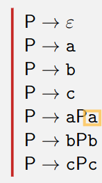
- A grammar consists of multiple productions. Productions can be seen as rewrite rules.
- The grammer makes use of auxiliary symbols, called nonterminals, that are not part of the alphabet and hence cannot be part of the final word/sentence
- The symbols from the alphabet are also called terminals.
Grammars can have multiple nonterminal
 One nonterminal in the grammar is called the start symbol
One nonterminal in the grammar is called the start symbol
2.1.2. Restricted grammars/context free
We consider only restricted grammars:
- The left hand side of a production always consists of a single nonterminal
Grammars with this restriction are called context-free
- Not all languages can be generated/described by a grammar.
- Multiple grammars may describe the same language.
- Grammars which generate the same language are equivalent.
- Even fewer languages can be described by a context-free grammar.
- Languages that can be described by a context-free grammar are called context-free languages.
- Context-free languages are relatively easy to deal with algorithmically, and therefore most programming languages are context-free languages
2.1.3. Examples:
natural numbers without leading zeros
- Dig-0 → 1 | 2 | 3 | 4 | 5 | 6 | 7 | 8 | 9
- Nat → 0 | Dig-0 Digs
Integers:
- Sign → + | -
- Int → Sign Nat | Nat or..
- Int → Sign? Nat
Fragment of C#:
- Stat → Var = Expr ;
- | if ( Expr ) Stat else Stat
- | while ( Expr ) Stat
- Expr → Integer
- | Var
- | Expr Op Expr
- Var → Identifier
- Op → Sign | *
2.1.4. Ambiguity
A grammar where every sentence corresponds to a unique parse tree is called unambiguous. If this is not the case the grammar is called ambiguous.
Example ambiguous grammar:
- S → SS
- S → a
Famous ambiguity problem:
- S → if b then S else S
- | if b then S
- | a
consider:
- if b then if b then a else a
Ambiguity is a property of grammars:
- All of these grammars describe the same language

- Not al of these are ambiguous
2.1.5. Grammar transformations
A grammar transformation is a mapping from one grammar to another, such that the generated language remains the same.
Formally: A grammar transformation maps a grammer G to another grammar G’ such that: \(L(G)=L(G')\)
Grammar transformations can help us to transform grammars with undesirable properties (such as ambiguity) into grammars with other (hopefully better) properties.
Most grammar transformations are motivated by facilitating parsing
2.2. Parsing
2.2.1. Parsing problem
Given a grammar G and a string s, the parsing problem is to decide wether or not \(s\in L(G)\)
Furthermore, if \(s\in L(G)\), we want evidence/proof/an explantion why this is the case, usually in the form of a parse tree.
2.2.2. Parse trees in haskell
Consider this grammar:
- S → S-D | D
- D → 0 | 1
Represent nonterminals as datatypes:
data S = Minus S D | SingleDigit D data D = Zero | One
The string 1-0-1 corresponds to the parse tree
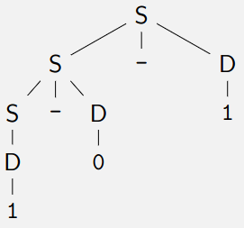
In haskell:
Minus (Minus (SingleDigit One) Zero) One
printS :: S → String printS (Minus s d) = printS s ++ "-" ++ printD d printS (SingleDigit d) = printD d printD :: D → String printD Zero = "0" printD One = "1" sample = Minus (Minus (SingleDigit One) Zero) One main = putStrLn (printS sample) -- "1-0-1"
2.3. Summary
Grammar A way to describe a language inductively.
Production A rewrite rule in a grammar.
Context-free The class of grammars/languages we consider.
Nonterminal Auxiliary symbols in a grammar.
Terminal Alphabet symbols in a grammar.
Derivation Successively rewriting from a grammar until we reach a sentence.
Parse tree Tree representation of a derivation.
Ambiguity Multiple parse trees for the same sentence.
Abstract syntax (Haskell) Datatype corresponding to a grammar.
Semantic function Function defined on the abstract syntax.
3. Parser Combinators
3.1. Parser data type
parseDate5 :: Parser Date parseMonth5 :: Parser Month parseDay5 :: Parser Day type Parser a = String -> [(a,String)]
Defining a parser could look like this:
parseDate5 :: Parser Date parseDate5 input = [(Date d m,tail') | (d,tail ) <- parseDay5 input , (m,tail') <- parseMonth5 tail]
This is a repetitive pattern, and quite error prone.
We want it to look like this:
parseDate6 = Date <$> parseDay <*> parseMonth
Notice this is similar to regular haskell function application, <$> -> $ and <*> -> .
<$> :: (Int -> (Month -> Date)) -> Parser Int -> Parser (Month -> Date) <*> :: Parser (Month -> Date) -> Parser Month -> Parser Date
3.2. Actual parse data type is slightly different
The actual type also has what type of symbol we are trying to parse, usually char.
type Parser a c = [c] -> [(a,[c])] (<*>) :: Parser s (a -> b) -> Parser s a -> Parser s b (<|>) :: Parser s a -> Parser s a -> Parser s a (<$>) :: (a -> b) -> Parser a -> Parser b
Using the parser
parse :: Parser s a → [s] → [(a, [s])] -- Examples: parse ints "23,11" == [((23, 11), "")] parse ints "23,11bla" == [((23, 11), "bla")] parse ints "whatever" == []
3.3. Implementing <*> and <$>
<$> :: (a -> b) -> Parser a -> Parser b (f <$> parse) input = [ (f x, tail) | (x, tail) <- parse input]
Examples
((1+) <$> parseNat) "100" == [(101,"")] (map toUpper <$> parseString "hello") "hello world" == [("HELLO"," world")]
Ussually this isn’t used directly, more often then not combined with <*>
<*> :: Parser (a -> b) -> Parser a -> Parser b (pf <*> px) input = [ (f x, tail1) | (f, tail1) <- pf input , (x, tail2) <- px tail1]
3.4. Examples <*> and <$>
Examples:
(,) <$> parseNat <*> parseString " green bottles" $ "42 green bottles hanging on the wall" == [((42," green bottles")," hanging on the wall")] fst <$> ((,) <$> parseNat <*> parseString " green bott " 42 green bottles hanging on the wall" == [(42," hanging on the wall")
3.5. Guard
Only succeed if the result of a parser satisfys a given predicate
guard :: (a -> Bool) -> Parser a -> Parser a guard cond parser input = [ (result, tail) | (result, tail) <- parser input , cond result]
Can also be defined using >>= (see further ahead for more details)
guard :: (a -> Bool) -> Parser a -> Parser a guard cond parser = parser >>= \a -> if cond a then succeed a else empty
3.6. Choice: <|>
Parses using either or both parsers
<|> :: Parser a -> Parser a -> Parser a (p1 <|> p2) input = p1 input ++ p2 input
choice takes a list of parsers and combines them in sequence, returning a list of results.
choice :: [Parser s a] -> Parser s a choice = foldr (<|>) empty
3.7. Longest
This function isn’t actually in library, but could still be a usefull example for a low level parser
longest :: Parser a -> Parser a longest parser input = concat . take 1 . groupBy ((==) `on` length . snd) . sortOn (length . snd) . parser $ input
3.8. <$ <* and *>
All of these are made for ignoring the result of a parser
- Basically only use the argument if the parser succeeds
<$ :: a -> Parser b -> Parser a (x <$ p) = const x <$> p
(<*) :: Parser s a -> Parser s b -> Parser s a p <* q = const <$> p <*> q
(*>) :: Parser s a -> Parser s b -> Parser s b p *> q = flip const <$> p <*> q
3.9. succeed and epsilon
Creates a parser that always results in the same value, doesn’t consume anything from the input string
succeed :: a → Parser s a succeed r xs = [(r,xs)] epsilon :: Parser s () epsilon = succeed ()
3.10. empty
Parser that always fails
empty :: Parser s a empty xs = []
3.11. satisfy and symbol
3.11.1. satify
satisfy takes a predicate and returns a parser that parses a single symbol satisfying that predicate.
satisfy :: (s -> Bool) -> Parser s s satisfy p (x:xs) | p x = [(x,xs)] satisfy _ _ = []
3.11.2. symbol
symbol parses a specific given symbol
symbol :: Eq s => s -> Parser s s symbol x = satisfy (==x)
3.12. Biased choice: <<|>
Biased choice. If the left hand side parser succeeds, the right hand side is not considered.
(<<|>) :: Parser s a → Parser s a → Parser s a (p <<|> q) = \xs → if null (p xs) then q xs else p xs
3.13. Bind: >>=
Monadic bind
(>>=) :: Parser s a -> (a -> Parser s b) -> Parser s b p >>= f = \xs -> [(s, zs) | (r, ys) <- p xs , (s , zs) <- f r ys]
We can use bind to redefine guard
guard :: (a -> Bool) -> Parser a -> Parser a guard cond parser = parser >>= \a -> if cond a then succeed a else empty
Another example of the use of this >>= primitive: we parse 1 number, and then parse that many other numbers:
pSizedList :: Parser Char [Int] pSizedList = natural -- parse the size <* spaces -- discard whitespace >>= \size -> -- use the size to build a new parser for the rest of the input sequence -- collapse a list of parsers into a parser of a list (replicate size -- repeat the following parser `size` times (natural <* spaces)) -- parse a number and discard whitespace
3.14. do notation
Because we have defined the bind operator we can also use the do notation!
guard :: (a -> Bool) -> Parser a -> Parser a guard cond parser = do a <- parser if cond a then return a else empty
Function to parse a number then parse that many lines
parseNLines :: Parser Char [String] parseNLines = do n ← natural _ ← symbol '\n' sequence $ replicate n parseLine where parseLine = many (satisfy (/= '\n')) <* symbol '\n'
3.15. Applicative functors and monads
The operations parsers support are very common, many other types support the same interface(s).
class Functor f where fmap :: (a -> b) -> f a -> f b (<$>) = fmap class Functor f => Applicative f where pure :: a -> f a (<*>) :: f (a -> b) -> f a -> f b class Applicative f => Alternative f where empty :: f a (<|>) :: f a -> f a -> f a class Monad m where (>>=) :: m a -> (a -> m b) -> m b
3.16. option
Parses an optional element. Takes the default value as its second argument.
option :: Parser s a → a → Parser s a option p def = p <|> succeed d
3.17. many, some, listOf and greedy
3.17.1. many
Parses many, i.e., zero or more, occurrences of a given parser.
many :: Parser s a -> Parser s [a] many p = (:) <$> p <*> many p <|> succeed []
3.17.2. some
Parser some, i.e., one or more, occurrences of a given parser.
Also called many1.
some :: Parser s a -> Parser s [a] some p = (:) <$> p <*> many p
3.17.3. listOf
Takes a parser p and a separator parser s. Parses a sequence of p’s that is separated by s’s
listOf :: Parser s a -> Parser s b -> Parser s [a] listOf p s = (:) <$> p <*> many (s *> p)
listOf example: parse digits seperated by `hi`
seperatedByHi :: Parser Char [Char] seperatedByHi = listOf digit (token "hi") main = print $ seperatedByHi "7hi2hi4"
3.17.4. greedy
Greedy variant of many will always parse the most amount it can
greedy :: Parser s a -> Parser s [a] greedy p = (:) <$> p <*> greedy p <<|> succeed []
Example difference between greedy and many:
parse (greedy (symbol 'a')) "aaaaaaabbbbbb"
Meanwhile many also return all the intermediate results
parse (many (symbol 'a')) "aaaaaaabbbbbb"
3.17.5. greedy1
Greedy variant of some:
greedy1 :: Parser s a -> Parser s [a] greedy1 p = (:) <$> p <*> greedy p
3.18. chainl and chainr
For more details see operators
chainl :: Parser s a -> Parser s (a -> a -> a) -> Parser s a chainl p s = foldl (flip ($)) <$> p <*> many (flip <$> s <*> p) chainr :: Parser s a -> Parser s (a -> a -> a) -> Parser s a chainr p s = flip (foldr ($)) <$> many (flip ($) <$> p <*> s) <*> p
4. Parser design
4.1. Grammar transformations
4.1.1. Removing duplicates
A → u | u | v
can be transformed into
A → u | v
Parser:
a = u <|> u <|> v
becomes
a = u <|> v
4.1.2. Left factoring
- Left recursion
A production is called left-recursive if the right hand side starts with the nonterminal of the left hand side.
Example:
A → Az
corresponds to a parser
a = a <*> z
- This parser would loop
- Removing left recursion is essential for a combinator parser
A grammar is called left-recursive if A ⇒+ Az for some nonterminal A of the grammar.
- Removing left recursion
First, split the productions for A into left-recursive and others:
\[A → Ax_1 | Ax_2 | . . . | A x_n\]
\[A → y_1 | y_2 | . . . | y_m \text{ \{-(none of the yi start with A) -\}}\]
Second add a second non-terminal for all the left recursive terms like this:
\[A → y_1Z | y_2Z | . . . | y_mZ\]
\[Z → ε | x_1Z | x_2Z | . . . | x_nZ\]
4.2. Operators
4.2.1. Parsing associative operators
Consider a grammar for simple equations:
E → E O E | Nat
O → + | -
- is not an assosiative operator, it is usually defined as associating to the left
data E = Plus E E | Minus E E | Nat Int
1+2-3+4 should parse as
((Nat 1 ‘Plus‘ Nat 2) ‘Minus‘ Nat 3) ‘Plus‘ Nat 4
This can obtained using:
foldl (flip ($)) (Nat 1) [(‘Plus‘ Nat 2), (‘Minus‘ Nat 3), (‘Plus‘ Nat 4)]
We can write a parser using the chainl function that has the above result
chainl :: Parser s a -> Parser s (a -> a -> a) -> Parser s a chainl p s = foldl (flip ($)) <$> p <*> many (flip <$> s <*> p) e = chainl (Nat <$> natural) o o = Plus <$ symbol '+' <|> Minus <$ symbol '-'
There is also chainr for right associative chains
chainr :: Parser s a -> Parser s (a -> a -> a) -> Parser s a chainr p s = flip (foldr ($)) <$> many (flip ($) <$> p <*> s) <*> p
chainl and chainr can be used for some common occurrences of left recursion.
4.2.2. Parsing associative operators of different priorities
The basic idea is to associate operators of different priorities with different non-terminals.
For each priority level i, we get \[E_i \rightarrow E_i\ Op_i\ E_{i+1}\ |\ E_{i+1} \text{ (for left-associative operators)}\] or \[E_i \rightarrow E_{i+1}\ Op_i\ E_{i}\ |\ E_{i+1} \text{ (for right-associative operators)}\] or \[E_i \rightarrow E_{i+1}\ Op_i\ E_{i+1}\ |\ E_{i+1} \text{ (for non-associative operators)}\]
Applied to \[ E \rightarrow E + E\] \[ E \rightarrow E - E\] \[ E \rightarrow E * E\] \[ E \rightarrow ( E )\] \[ E \rightarrow Nat \] we obtain: \[ E_1 \rightarrow E_1\ Op_1\ E_2\ |\ E_2 \] \[ E_2 \rightarrow E_2\ Op_2\ E_3\ |\ E_3 \] \[ E_3 \rightarrow ( E_1 ) | Nat \] \[ Op_1 \rightarrow + | - \] \[ Op_2 \rightarrow * \]
Since the abstract syntax tree structure makes the nesting explicit, it typically makes sense to derive the Haskell datatype from the ambiguous grammar:
- same for parantheses
data E = Plus E E | Minus E E | Times E E | Nat
Now we can use chainl and chainr again for each of the levels
e1, e2, e3 :: Parser Char E e1 = chainl e2 op1 e2 = chainl e3 op2 e3 = parenthesised e1 <|> Nat <$> natural op1, op2 :: Parser Char (E -> E -> E) op1 = Plus <$ symbol '+' <|> Minus <$ symbol '-' op2 = Times <$ symbol '*'
4.2.3. A general operator parser
type Op a = (Char, a -> a -> a) gen :: [Op a] -> Parser Char a -> Parser Char a gen ops p = chainl p (choice (map (\(s, c) -> c <$ symbol s) ops))
now the parser looks like this
e1 = gen [(’+’, Plus), (’-’, Minus)] e2 e2 = gen [(’*’, Times)] e3
We could also do without the intermediate levels using a fold
e1 = foldr gen e3 [[(’+’, Plus), (’-’, Minus)], [(’*’, Times)]]
5. Regular Expressions
5.1. A simpler subset of parser combinators
We would like to create a simple subset of parser combinators
- Should work in other languages
- Works in for example a search bar
For this language we only consider char as the input type and string as the output type.
- So it only parses a string to a string
We have to convert the primitive <*> because it is a higher order function.
<*> :: P (a -> b) -> P a -> P b
<,> :: P a -> P b -> P (a, b)
We only want string as a result so we convert <,> to:
<+> :: P String -> P String -> P String
<|> :: R -> R -> R <+> :: R -> R -> R many :: R -> R many1 :: R -> R option :: R -> R symbol :: Char -> R satisfy :: (Char -> Bool) -> R type R = Parser Char String
5.2. Regular Expression
The following expressions in the simplified languages can be converted to regex:
| Haskell | Regular Expression |
|---|---|
| p1 <|> p2 | r1|r2 |
| p1 <+> p2 | r1r2 |
| many p | r* |
| many1 p | r+ |
| option p | r? |
| symbol c | c |
| satisfy isDigit | \d |
| satisfy isWhitespace | \s |
| satisfy (not . isWhitespace) | \S |
| satisfy (`elem` [’a’..’z’]) | [a-z] |
5.3. Limitations of regular expressions/languages
No parsing
matchRegExp "\w+ on (toast|bread)" "beans on toasted potato" == ["beans on toast"]
No recursion
- No matching brackets for example
6. Finite State Machines
We want to create a efficient algorithm for matching regular expressions.
6.1. Moore Machine
Computers are complicated so instead we consider a Moore Machine
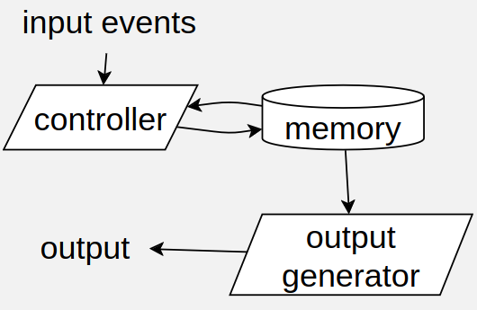
Moore machine can also be known as:
6.1.1. Example: moore machine for lamp
We can model the function of a lamp with three buttons using a moore machine
- It has a button for cold and warm light, we can also turn it on
- The on/off button remembers the last light color
It can be modeled in haskell like this:

As a Moore Machine:

6.1.2. Advantages of Moore Machines
- Easy to use
- Easy to modify
- Easy to verify
- Easy to implement
- Programming languages
- Hardware
- Mathematics
data Moore event memory output = Moore { step :: event -> memory -> memory , genOut :: memory -> output , s0 :: memory} type DFA symbol state = Moore symbol state Bool
See above example for an implementation
A Moore machine can be defined a a 6-tuple \((S,s_0,\Sigma,O,\delta,G)\)
- A finite set of states \(S\)
- A initial state \(s_0\) which is an element of S
- A finite set called the input alphabet \(\Sigma\)
- A finite set called the output alphabet \(O\)
- A transition function \(\delta : S \times \Sigma \rightarrow S\) mapping a state and the input to the next state
- An output function \(G:S\rightarrow O\) mapping each state to the output alphabet
You probably don’t have to learn the above by heart, just an example of how a moore machine can be implemented
6.1.3. Running Moore Machines
runMoore :: Moore inp state out -> [inp] -> state runMoore (Moore step _ s0) = foldr step s0 runDFA :: DFA symbol state -> [symbol] -> state runDFA = runMoore matchesDFA :: DFA symbol state -> [symbol] -> Bool matchesDFA dfa = genOutput dfa . runDFA dfa
6.2. Moore Machines for RegExp Matching
6.2.1. Examples
An example Moore Machine for the regular expression a*aaaba*

Another example with expression (0b)?(0|1)+, which matches a binary number such as 0b001 or 100101
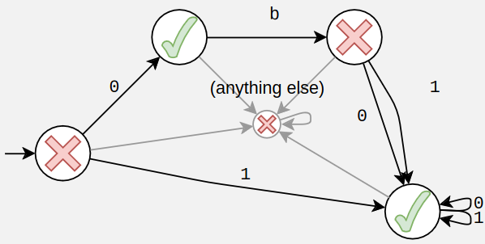
6.2.2. Compiling Regular Expressions to DFA
Not all of regular expressions have a direct and easy translation to DFA, this is why we end up using NFAε
- Later we convert the NFAε back to DFA, i know somewhat confusing, but its easier that way.
c
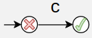
\d
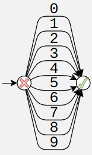
[x-z]
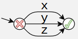
r1r2
- Every succes state of r1 should be linked to the beginning of r2

r1|r2
- this one is quite difficult, because the two expressions can overlap
- in general they should just be combined, making sure the overlapping states are also combined
- DFA has to be deterministic

The following aren’t possible using DFA
r+r*r?
To match these we have to use a nondeterministic finite automaton
6.2.3. Regex to Non Deterministic Finite Automaton (NFA)
We opt to use NFAε instead of DFA for regular expression matching
- A lot easier to create
r+
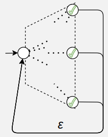
r*
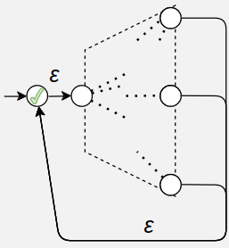
r?
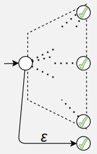
r1|r2

r1r2

All other expression are the same as DFA
6.2.4. Running NFAε
runNFAε :: NFAε symbol state -> [symbol] -> Set state runNFAε (NFAε step εsteps genOut s0) = foldr (reachable εsteps (s0 nfa)) (\symbol -> Set.unions . Set.map (reachable εsteps . step nfa symbol)) reachable :: Set (state,state) -> state -> Set state -- was left as an exercise, should be pretty easy with breadth first search reachable = undefined
6.2.5. Performance of the NFA regex
If n = length input and m = length regexp, then…
- \(O(nm)\) time
Best know algorithm (2009):
- \(O(n)\) space
- \(O(nm\frac{\log \log n}{\log^{\frac 3 2}n}+n+m)\) time
6.2.6. Converting NFAε to DFA
Basically just create a DFA where the state variable is a set of state
The implementation is somewhat similar to runNFA𝜀
runNFAε :: NFAε sy st -> [sy] -> Set st runDFA :: DFA sy (Set st) -> [sy] -> Set st runNFAε = runDFA . n2d n2d :: NFAε sy st -> DFA sy (Set st) n2d (NFAε step εsteps genOut s0) = Moore { s0 = reachable εsteps (s0 nfa) -- :: Set state , step = sy -> Set.unions . Set.map (reachable εsteps . step nfa sy) -- :: symbol → Set state → Set state , genOut = any genOut} -- :: Set state -> Bool
7. Folding
A compiler roughly has the folowing phases
- Lexing and parsing
- Analysis and type checking
- Desugaring
- Optimization
- Code generation
Abstract syntax trees play a central role:
- Some phases build AST’s (parsing)
- Most phases traverse AST’s (analysis, type checking, code generation)
- Some phases traverse one AST and build another (desugaring)
We use folding to systematically traverse an AST
7.1. List folding
Most common functions over lists can be expressed as folds
foldr :: (a -> r -> r) -> r -> [a] -> r foldr v [] = v foldr f v (x : xs) = f x (foldr f v xs) sum = foldr (+) 0 length = foldr (\r -> 1 + r) 0
We can pack the arguments to foldr into a single one, which we call list algebra
type ListAlgebra a r = (r, a → r → r) foldr :: ListAlgebra a r → [a] → r foldr (v, ) [] = v foldr (v, f) (x : xs) = f x (foldr (v, f) xs)
For example we can express map and filter as a list algebra
mapAlg :: (a->b) -> ListAlgebra a [b] mapAlg f = ([], \a bs -> f a : bs) filterAlg :: (a -> Bool) -> ListAlgebra a [a] filterAlg f = ([], \x xs -> if f x then x : xs else xs)
7.2. Matched parentheses
Consider a grammer with corresponding data type
- \(S\rightarrow (S)S|\epsilon\)
data Parens = Match Parens Parens | Empty
Consider two functions:
- One counts the number of pairs
- One gets the maximal nesting depth
count :: Parens -> Int count (Match p1 p2) = (count p1 + 1) + count p2 count Empty = 0 depth :: Parens -> Int depth (Match p1 p2) = (depth p1 + 1) `max` depth p2 depth Empty = 0
Both these functions have the following structure:
f :: Parens -> ... f (Match p1 p2) = ... (f p1) (f p2) f Empty = ...
We can define a fold algebra like this
type ParensAlgebra r = (r -> r -> r, -- match r) -- empty foldParens :: ParensAlgebra r -> Parens -> r foldParens (match, empty) = f where f (Match p1 p2) = match (f p1) (f p2) f Empty = empty
Now we can redefine the functions using a fold:
countAlgebra :: ParensAlgebra Int countAlgebra = (\c1 c2 -> c1 + c2 + 1, 0) count = foldParens countAlgebra depthAlgebra :: ParensAlgebra Int depthAlgebra = (\d1 d2 -> (d1 + 1) `max` d2, 0) depth = foldParens depthAlgebra printAlgebra :: ParensAlgebra String printAlgebra = (\p1 p2 -> "(" ++ p1 ++ ")" ++ p2, "") print = foldParens printAlgebra
7.3. Arithmetic expressions
Lets take a simple grammar for arithmetic expressions
- \(E → E + E\)
- \(E → - E\)
- \(E → Nat\)
- \(E → ( E )\)
We convert it to the following grammar because of operator associativity
- \(E → E' + E | E'\)
- \(E' → - E'\)
- \(E' → Nat\)
- \(E' → ( E )\)
The haskell data type is based on the orginal grammar
data E = Add E E | Neg E | Num Int
The structures/types of the function reflects the structure of the datatype.
Add :: E -> E -> E Neg :: E -> E Num :: Int -> E type EAlgebra r = (r -> r -> r, -- add r -> r, -- neg Int -> r) -- num
With the algebra we define a fold
foldE :: EAlgebra r -> E -> r foldE (add, neg, num) = f where f (Add e1 e2) = add (f e1) (f e2) f (Neg e) = neg (f e) f (Num n) = num n
Using this fold we can create an evaluation function for the expression data type
evalAlgebra :: EAlgebra Int evalAlgebra = ((+), negate, id) eval = foldE evalAlgebra
7.4. Building a fold for any datatype
For a datatype T, we can define a fold function as follows:
- Define an algebra type TAlgebra that is based on all of T’s parameters, plus a result type r.
- The algebra is a tuple containing one component per constructor function
- You could also use the record syntax, to give each component a name
- The types of the components are like the types of the constructor functions, but all occurrences of T are replaced with r, the result type.
- The fold function is defined by traversing the data structure, replacing constructors with their corresponding algebra components, and recursing where required.
Every datatype has an identity algebra, which arises by using the constructors as components of the algebra.
7.4.1. Trees example
data Tree a = Leaf a | Node (Tree a) (Tree a) Leaf :: a -> Tree a Node :: Tree a -> Tree a -> Tree a type TreeAlgebra a r = (a -> r, -- leaf r -> r -> r) -- node foldTree :: TreeAlgebra a r -> Tree a -> r foldTree (leaf, node) = f where f (Leaf x) = leaf x f (Node l r) = node (f l) (f r)
sizeAlgebra :: TreeAlgebra a Int sizeAlgebra = (const 1, (+)) sumAlgebra :: TreeAlgebra Int Int sumAlgebra = (id, (+)) inorderAlgebra :: TreeAlgebra a [a] inorderAlgebra = ((:[]), ++) reverseAlgebra :: TreeAlgebra a (Tree a) reverseAlgebra = (Leaf, flip Node) idAlgebra :: TreeAlgebra a (Tree a) idAlgebra = (Leaf, Node)
7.5. TODO Fix
Dit leek me niet super nuttig, misschien later samenvatten.
Het is een manier om nog verder te abstracten op de algemene structuur van folds enzo


7.6. Algebra for families of datatypes
Each datatype in the family can have its own result type.
example:
Result type e for expressions, result type d for declarations
Add :: E -> E -> E Neg :: E -> E Num :: Int -> E Var :: Id -> E Def :: D -> E -> E Dcl :: Id -> E -> D type EDAlgebra e d = (e -> e -> e, e -> e, Int -> e, Id -> e, d -> e -> e, Id -> e -> d)
We also need one function per type to traverse the structure:
foldE :: EDAlgebra e d -> E -> e foldE (add, neg, num, var, def, dcl) = fe where fe (Add e1 e2) = add (fe e1) (fe e2) fe (Neg e) = neg (fe e) fe (Num n) = num n fe (Var x) = var x fe (Def d e) = def (fd d) (fe e) fd (Dcl x e) = dcl x (fe e) fe :: E -> e fd :: D -> d
We can also add a list type to one of the constructors:
data E = ... | Def [D] E -- modified -- We keep the list in the algebra type EDAlgebra e d = ( ..., [d] -> e -> e, ...) foldE :: EDAlgebra e d -> E -> e foldE (add, neg, num, var, def, dcl) = fe where ... fe (Def ds e) = def (map fd ds) (fe e) ...
7.7. RepMax fold
RepMax replaces all the elements of a list with the largest number.
We use this function as an example of a sort of ’recursive’ fold
- You have to now the max before you can fold the list
It can be implemented using two folds:
maxAlg :: ListAlgebra Int Int maxAlg = LAlg {nil = minBound, cons x m = x ‘maximum‘ m} repAlg :: Int -> ListAlgebra Int [Int] repAlg m = LAlg {nil = [], cons xs = m : xs} repMax xs = foldr repAlg (foldr maxAlg xs) xs
It can be implemented using a single fold
repMaxAlg :: ListAlgebra Int (Int -> ([Int], Int)) repMaxAlg = LAlg {nil = \max -> ([], minBound) , cons x f = \max -> let (ys, maxSoFar) = f max in (max : ys, x ‘maximum‘ maxSoFar)} repMax :: [Int] -> [Int] repMax xs = maxs where (maxs, max) = foldr repMaxAlg xs max
Note the recursion in the last line, we the result of the function to the actual function, this can be done in haskell because magic and laziness and stuff.
8. Simple Stack Machine
8.1. Documentation
A lot more detailed documentation can be found on the SSM page:
8.2. Architecture
The simple stack machine is a virtual machine that executes programs consisting of assembly language instructions
The program is a list of instructions with arguments, stored in a continuous block of memory.
A stack is used to store the current state of execution
There are eight registers, four with a special name:
- program counter (PC)
- stack pointer (SP)
- mark pointer (MP)
- return register (RR)
A step in the execution interprets the instruction pointed to by the program counter.
Depending on the instruction, the contents of the stack and registers are modified.
8.3. Instructions
8.3.1. LDC - load constant
Pushes the inline constant on the stack.
8.3.2. LDR - load from register
Pushes a value from a register onto the stack.
8.3.3. LDL - loal local
Pushes a value relative to the markpointer register.
Example:
Before:

after
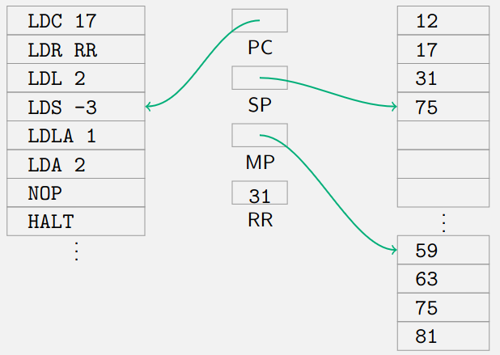
8.3.4. LDS - load from stack
Pushes a value relative to the top of the stack.
example:
before:
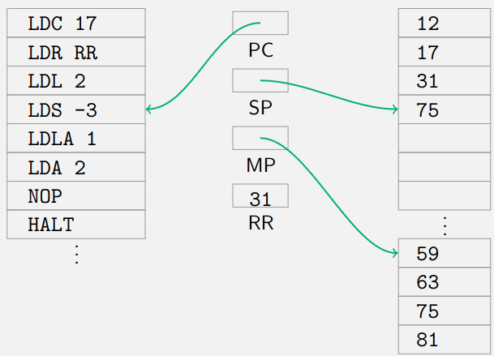
after:

8.3.5. LDLA - load local adress
Pushes the address of a value relative to the markpointer.
There seems to be a mistake in the example of the slides so it is not included here
8.3.6. LDA - load via adress
Pushes the value pointed to by the value at the top of the stack. The pointer value is offset by a constant offset.
Once again slides examples seem to be incorrect
8.3.7. LDRR - load register from register
Copy the content of the second register to the first. Does not affect the stack.
examples:
before:

after:
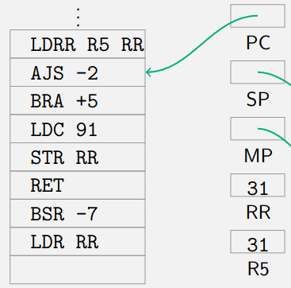
8.3.8. NOP - noop
No operation, does nothing, goes to next instruction.
8.3.9. HALT - halt program
Machine stops executing instructions.
8.3.10. AJS - adjust stack pointer
Adjusts the stackpointer with fixed amount.
example:
begin:

after:
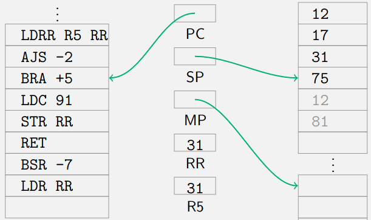
8.3.11. BRA - unconditional branch
Jumps to the destination. Replaces the PC with the destination address.
8.3.12. BSR - branch to subroutine
Pushes the PC on the stack and jumps to the subroutine.
example:
before:

after:
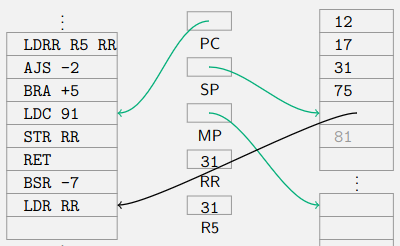
8.3.13. RET - return from subroutine
Pops a previously pushed PC from the stack and jumps to it.
example:
before:
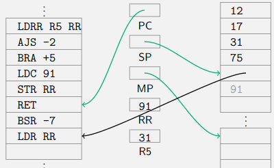
after:

8.3.14. STR - store to register
Pops a value from the stack and stores it in the specified register. See also ldr.
8.3.15. STS - store into stack
Pops a value from the stack and stores it in a location relative to the top of the stack.
8.3.16. STL - store local
Pops a value from the stack and stores it in a location relative to the markpointer.
8.3.17. Operators
Operators remove stack arguments and put the result back on the stack.
Binary operators:
ADD- AdditionSUB- SubstractionMUL- MultiplicationDIV- DivisionMOD- ModuloAND- Bitwise AndOR- Bitwise OrXOR- Bitwise Exclusive OrEQ- Test for equal, false is encoded as 0, true as 1NE- Test for not equal, false is encoded as 0, true as 1LT- Test for less then, false is encoded as 0, true as 1GT- Test for greater then, false is encoded as 0, true as 1LE- Test for less then or equals, false is encoded as 0, true as 1GE- Test for greater then or equals, false is encoded as 0, true as 1
Unary operators:
NOT- Bitwise complement of the valueNEG- Integer negation

8.4. Translating programs
8.4.1. Translating expressions
- Translating simple expressions
t \[3+4*7+2\]
Can be translated into:
LDC 3 LDC 4 LDC 7 MUL ADD LDC 2 ADD
The translation can be done is haskell:
data Expr = Num Int | Add Expr Expr | Mul Expr Expr | Neg Expr | Eq Expr Expr code :: Expr -> Code code (Num n) = [LDC n] code (Add e1 e2) = code e1 ++ code e2 ++ [ADD] code (Mul e1 e2) = code e1 ++ code e2 ++ [MUL] code (Neg e) = code e ++ [NEG] code (Eq e1 e2) = code e1 ++ code e2 ++ [EQ]
The translation can also be done using a fold with a special algebra:
code x = foldExpr codeAlg x where codeAlg :: ExprAlg Code codeAlg = ExprAlg { num = \n -> [LDC n] , add = \l r -> l ++ r ++ [ADD] , neg = \l -> l ++ [NEG] , eq = \l r -> l ++ r ++ [EQ] }
- Conditionals
Conditionals can be translated like this:
data Expr = ... | If Expr Expr Expr code :: Expr -> Code code = . . . code (If c t f) = cc ++ [BRF (st + 2)] ++ ct ++ [BRA sf] ++ cf where cc = code c ct = code t cf = code f st = codeSize ct sf = codeSize cf

Once again it can be expressed using a fold and an algebra:
code x = foldExpr codeAlg x where codeAlg :: ExprAlg Code codeAlg = ExprAlg { num = \n -> [LDC n] , add = \l r -> l ++ r ++ [ADD] , neg = \l -> l ++ [NEG] , eq = \l r -> l ++ r ++ [EQ] , if = \c t f -> let st = codeSize t sf = codeSize f in c ++ [BRF (st + 2)] ++ t ++ [BRA sf] ++ f }
- Variables and environments
To add variables to the code, we change the type of the code, to include an environment as an argument.
data Expr = ... | Var String | Let String Expr Expr code x = foldExpr codeAlg x empty where codeAlg :: ExprAlg (Env -> Code) codeAlg = ExprAlg { num = \n -> \e -> [LDC n] , add = \l r -> \e -> l e ++ r e ++ [ADD] , neg = \l -> \e -> l e ++ [NEG] , eq = \l r -> \e -> l e ++ r e ++ [EQ] , if = \c t f -> \e -> let st = codeSize (t e) sf = codeSize (f e) in c e ++ [BRF (st + 2)] ++ t e ++ [BRA sf] ++ f e , var = \s -> \e -> [LDL (e ! s)] , leT = \s d b -> \e -> d e ++ [STL (size e)] ++ b (insert s (size e) e) }
8.4.2. Statements
We extend our lanuage with statements:
data Stmt = Assign String Expr | If Expr Stmt Stmt | While Expr Stmt | Call String [Expr]
For many languages, the following invariants hold:
- Expressions always leave a single result on the stack after evaluation
- Statements do not leave a result on the stack after evaluation
- While loops
Translating while loops can be done in multiple ways: (cc is loop condition, cb is loop body)
- The one on the right is more efficient
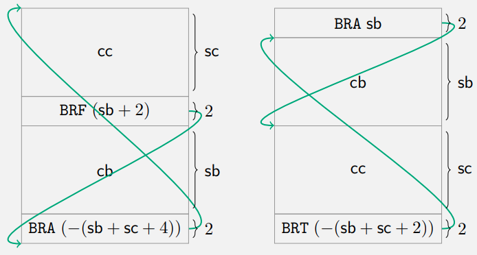
data Stmt = . . . | While Expr Stmt code :: Stmt -> Code code = ... code (While c b) = [BRA sb] ++ cb ++ cc ++ [BRT (−(sb + sc + 2))] where cc = code c cb = code b sc = codeSize cc sb = codeSize cb
Once again it can be done using an algebra:
data SEAlg s e = SEAlg { add :: e -> e -> e , num :: Int -> e , ifE :: e -> e -> e -> e , ifS :: e -> s -> s -> s , asg :: String -> e -> s , whl :: e -> s -> s , cal :: String -> [e] -> s } foldSE :: SEAlg s e -> Statement -> s foldSE alg {. .} = fs where fs (IfS c t f) = ifS (fe c) (fs t) (fs f) fe (IfE c t f) = ifE (fe c) (fe t) (fe f) fs (Call v ps) = cal v (map fe ps) fe (Add x y) = add (fe x) (fe y) fe (Num n) = num n code x = foldSE codeAlg x empty where codeAlg :: SEAlg (Env -> Code) (Env -> Code) codeAlg = SEAlg { asg = \s d e -> d e ++ [STL (e ! s)] , ifS = \c t f e -> let st = codeSize (t e) sf = codeSize (f e) in c e ++ [BRF (st + 2)] ++ t e ++ [BRA sf] ++ f e , whl = \c b e -> let sc = codeSize (c e) sb = codeSize (b e) in [BRA sb] ++ b e ++ c e ++ [BRT (−(sb + sc + 2))] , cal = \m ps e -> concatMap ($e) ps ++ [BSR m] , . . .}
- Method translation
- Method translation with local variables
Method call as before.
Method definition (\(n\) parameters, \(k\) local variables)
- Create room for local variables:
LDR MPto save the mark pointer,LDRR MP SPto reset the mark pointer,AJS +kto adjust the stack pointer. (Also available as a single instruction LINK k.) - Use parameters: from
LDL −(n + 1)toLDL −2. - Use local variables: from
LDL +1toLDL +k. - Clean up local variables:
LDRR SP MPto reset the stack pointer, andSTR MPto restore the mark pointer. (Also available as a single instructionUNLINK.) - Clean up:
STS −nfollowed byAJS −(n − 1). - Return:
RET
- Create room for local variables:
- Example method translation with local variables
m(7, 12); void m (int x, int y) { int a, b; a = -x; . . . }
After the call we push the current mark pointer onto the stack

Then we put the contents of the stack pointer into the mark pointer

Then we adjust the stack pointer by +2, to make space for a and b

Then we load 7, the x variable onto the top of the stack, using LDL -3
Then we call
NEGwhich will negate the argument at the top of the stack, 7
Then we call STL +1 to store -7 in the a variable

Then we copy the markpointer register to the stack pointer register, returing the stackpointer to the position it was at the beginning of the function call

Then we pop the old position of the mark pointer and put it into the mark pointer.
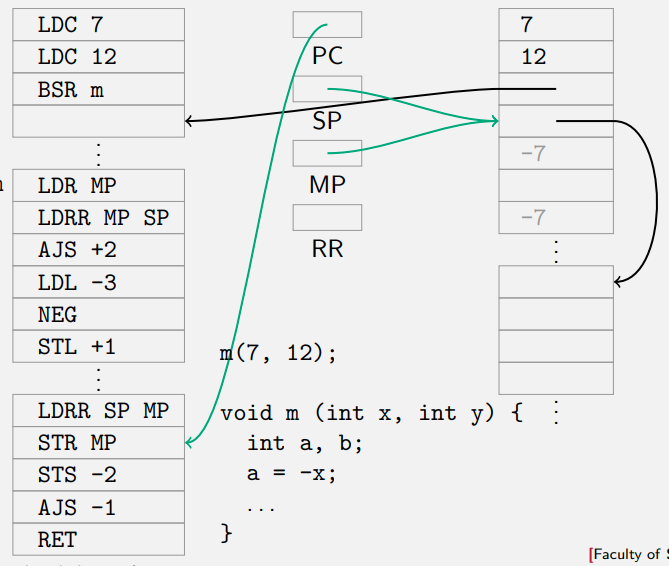
Then we call STS -2, which stores the current top of the stack (the return pointer/adress) two positions up relative to the top of the stack. We do this to remove the arguments of the function from the stack.

Then we adjust the stack so the return adress is on top

Then finally, we call the return function Pops a previously pushed PC from the stack and jumps to it.
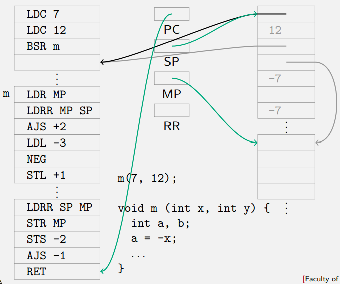
- Method translation with return values
There are two options for methods with return values:
Result on stack
- Leave the result as the final value on the stack.
- Adapt the cleanup code so that this works.
Result in register
- Place the result of a method call in a fixed free register (RR for example).
- Use the value from there at the call site
9. Validation
A compiler will also compile any bugs introduced by a programmer.
With machine code the error message usually isn’t nice.
- Having a clear error message is better
Where do we look for bugs
- In the code
- Machine code
- Runtime?
- The programmer?
All technique’s ussually has some point of diminishing return.
- We should do all!
This lecture we will only look at checking the source code
Who check it
- programmer
- 3rd party tester
- automated/machine
At code level
- Hlint
At AST level
- scope
- type
- termination
- borrow
At machine code level
- SAST bugrpove
- size-limit test
9.1. Example checks at AST level
Rest van de lecture was niet boeiend, saai voorbeeld van type checker:
Dit is het uiteindelijke resultaat, niet super boeiend.
{- Language 3: floating-point/boolean expressions -} module Demo3 where import Demo1 (Valid(..)) data Exp = Con Float | Add Exp Exp | Mul Exp Exp | Pow Exp Exp | If Exp Exp Exp | Leq Exp Exp deriving Show seven = If (Con 3.0 `Leq` Con 4.0) (Con 7.0) (Con 9.0) eval :: Exp -> Either Float Bool eval (Con k) = Left k eval (Add e1 e2) = Left (p + q) where Left p = eval e1; Left q = eval e2 eval (Mul e1 e2) = Left (p * q) where Left p = eval e1; Left q = eval e2 eval (Pow e1 e2) = Left (p ** q) where Left p = eval e1; Left q = eval e2 eval (If h t e) = if h' then eval t else eval t where Right h' = eval h eval (Leq e1 e2) = Right (p <= q) where Left p = eval e1; Left q = eval e2 {- ✅ eval seven -} {- 💩 eval is ugly -} {- 🕵 -} nseven = If (Con 3.0) (Con 7.0) (Con 9.0) {- > eval nseven -} {- 💩 crashes on the user's computer! -} {- 💡 write type-checker -} data Type = Float | Bool deriving (Show, Eq) -- check :: Type -> Exp -> Bool -- check Float (Con _) = True -- check Float (Add e1 e2) = check Float e1 && check Float e2 -- check Float (Mul e1 e2) = check Float e1 && check Float e2 -- check Float (Pow e1 e2) = check Float e1 && check Float e2 -- check ty (If h t e) = check Bool h && check ty t && check ty e -- check _ _ = False -- safeEval :: Type -> Exp -> Maybe (Either Float Bool) -- safeEval t e = -- if check t e -- then Just $ eval e -- else Nothing {- > safeEval Float nseven -} {- 💩 safeEval should not need a Type param -} {- 💩 'Nothing' is not a nice error message -} {- 💩 eval is ugly -} {- 💡 get rid of the Type param by inferring type -} -- infer :: Exp -> Maybe Type -- infer e@(Con _) = if check Float e then Just Float else Nothing -- infer e@(Add _ _) = if check Float e then Just Float else Nothing -- infer e@(Mul _ _) = if check Float e then Just Float else Nothing -- infer e@(Pow _ _) = if check Float e then Just Float else Nothing -- infer e@(Leq _ _) = if check Bool e then Just Bool else Nothing -- infer (If h t e) = do -- t_ty <- infer t -- e_ty <- infer e -- if t_ty == e_ty && check Bool h -- then Just t_ty -- else Nothing {- note the re-use of check (to avoid duplication) -} -- safeEval :: Exp -> Maybe (Either Float Bool) -- safeEval e = infer e >> Just (eval e) {- > safeEval nseven -} {- 💩 infer, check ugly -} {- 💩 'Nothing' is not a nice error message -} {- 💡 use Maybe () instead of Bool to unlock <*> etc. -} -- check :: Type -> Exp -> Maybe () -- check Float (Con _) = Just () -- check Float (Add e1 e2) = () <$ check Float e1 <* check Float e2 -- check Float (Mul e1 e2) = () <$ check Float e1 <* check Float e2 -- check Float (Pow e1 e2) = () <$ check Float e1 <* check Float e2 -- check ty (If h t e) = () <$ check Bool h <* check ty t <* check ty e -- check _ _ = Nothing -- infer :: Exp -> Maybe Type -- infer e@(Con _) = Float <$ check Float e -- infer e@(Add _ _) = Float <$ check Float e -- infer e@(Mul _ _) = Float <$ check Float e -- infer e@(Pow _ _) = Float <$ check Float e -- infer e@(Leq _ _) = Bool <$ check Bool e -- infer (If h t e) = do -- check Bool h -- t_ty <- infer t -- t_ty <$ check t_ty e -- safeEval :: Exp -> Maybe (Either Float Bool) -- safeEval e = infer e >> Just (eval e) {- Unchanged: safeEval nseven -} {- 💩 'Nothing' is not a nice error message -} {- 💡 replace Maybe with Either -} data CheckingErr = Expected Type {- in -} Exp deriving Show -- check :: Type -> Exp -> Either CheckingErr () -- check Float (Con _) = Right () -- check Float (Add e1 e2) = () <$ check Float e1 <* check Float e2 -- unchanged -- check Float (Mul e1 e2) = () <$ check Float e1 <* check Float e2 -- unchanged -- check Float (Pow e1 e2) = () <$ check Float e1 <* check Float e2 -- unchanged -- check ty (If h t e) = () <$ check Bool h <* check ty t <* check ty e -- unchanged -- check expected_ty e = Left $ Expected expected_ty e -- infer :: Exp -> Either CheckingErr Type -- infer e@(Con _) = Float <$ check Float e -- infer e@(Add _ _) = Float <$ check Float e -- unchanged -- infer e@(Mul _ _) = Float <$ check Float e -- unchanged -- infer e@(Pow _ _) = Float <$ check Float e -- unchanged -- infer e@(Leq _ _) = Bool <$ check Bool e -- unchanged -- infer (If h t e) = do -- unchanged -- check Bool h -- unchanged -- t_ty <- infer t -- unchanged -- t_ty <$ check t_ty e -- unchanged -- safeEval :: Exp -> Either CheckingErr (Either Float Bool) -- safeEval e = infer e >> Right (eval e) -- {- ✅ safeEval nseven -} neight = If (Con 3.0) (If (Con 0.0) (Con 0.0) (Con 0.0)) (Con 8.0) {- > safeEval neight -} {- 💩 only one error reported! -} {- 💡 bring back Valid -} check :: Type -> Exp -> Valid [CheckingErr] () check Float (Con _) = OK () check Float (Add e1 e2) = () <$ check Float e1 <* check Float e2 -- unchanged check Float (Mul e1 e2) = () <$ check Float e1 <* check Float e2 -- unchanged check Float (Pow e1 e2) = () <$ check Float e1 <* check Float e2 -- unchanged check ty (If h t e) = () <$ check Bool h <* check ty t <* check ty e -- unchanged check expected_ty e = Err [Expected expected_ty e] infer :: Exp -> Valid [CheckingErr] Type infer e@(Con _) = Float <$ check Float e -- unchanged infer e@(Add _ _) = Float <$ check Float e -- unchanged infer e@(Mul _ _) = Float <$ check Float e -- unchanged infer e@(Pow _ _) = Float <$ check Float e -- unchanged infer e@(Leq _ _) = Bool <$ check Bool e -- unchanged infer (If h t e) = do -- unchanged check Bool h -- unchanged t_ty <- infer t -- unchanged t_ty <$ check t_ty e -- unchanged safeEval :: Exp -> Valid [CheckingErr] (Either Float Bool) safeEval e = infer e >> OK (eval e) {- ✅ safeEval neight -} {- 💩 eval is still ugly -} {- 🏋🏋 implement... * A type Exp_Float allowing *only* Float-typed Exps * validate :: Exp -> Valid [CheckingErr] Exp_Float * evalFloat :: Exp_Float -> Float * safeEval in terms of `validate` and `evalFloat` Hint: you will also need to implement corresponding defintions for Bool-typed Exp s (or use a GADT) -}
10. Pumping Lemmas, proving (non)regular languages
10.1. General strategy for proving a language (non) regular
Regular language: a language that can be expressed using a regular expression, sometimes defined as a language recognised by a finite automaton.
Generally, proving that a language does not belong to a certain class is much more difficult than proving that it does.
In the case of regular languages,
- to show that a language is regular, we have to give one regular grammar (or regular expression, or DFA, or NFA) that describes the language;
- to show that a language is not regular, we have to prove that no regular grammar (or regular expression, or DFA, or NFA) is possible that describes the language
The strategy is as follows:
- we expose a limitation in the formalism (in this case, in the concept of finite state automata);
- from this limitation, we derive a property that all languages in the class (in this case, regular languages) must have;
- therefore, if a language does not have that property, it cannot be in the class.
10.2. Proving a language non-regular
Assume we have a deterministic finite state automaton
10.2.1. Strategy step 1: limitation in the formalism
we expose a limitation in the formalism (in this case, in the concept of finite state automata)
Any finite state automaton has a finite number of states.
Assume we have one with n states.
How many different states do we visit while reading a string that is accepted and has length n?
n + 1 or less, and if less, we traverse a loop. But there are only n states, so we cannot traverse n + 1 different states. Therefore, we must traverse a loop.
We have done the first step of the strategy. We have found a limitation in the formalism. Now we have to derive a property for all regular languages from that.
10.2.2. Step 2: property of language class
From previous limitation, we derive a property that all languages in the class (in this case, regular languages) must have.
If we have a word that is accepted and traverses the loop once, then the words that follow the same path and traverse the loop any other number of times are also accepted
This is an excerpt of the automaton. There may be other nodes and edges.
- Both u and w may be empty (i.e. A and S or A and E may be the same state), but v is not empty – there is a proper loop.
- All words of the form \(uv^iw\) for \(i\in \mathbb{N}\) are accepted.
A loop has to occur in every subword of at least length n:
Assume we have an accepted word xyz where subword y is of at least length n
A loop has to occur in every subword of at least length n:
- Assume we have an accepted word xyz where subword y is of at least length n.
- Then y has to be of form uvw where v is not empty and corresponds to a loop.
- All words of the form \(xuv^iwz\) for \(i\in\mathbb{N}\) are accepted
Pumping lemma for regular languages:
- For every regular language L, there exists an \(n\in \mathbb{N}\)
- (corresponding to the number of states in the automaton)
- such that for every word \(xyz\) in L with \(|y| \ge n\),
- (this holds for every long substring of every word in L)
- we can split y into three parts, \(y = uvw\), with \(|v| > 0\),
- (v is a loop)
- such that for every \(i\in\mathbb{N}\) , we have \(xuv^iwz \in L\)
10.2.3. Step 3: pumping lemma
The we proceed with the final step of the strategy. In order to show that a language is not regular, we show that it does not have the pumping lemma property as follows:
- We assume that the language is regular.
- We use the pumping lemma to derive a word that must be in the language, but is not:
- find a word \(xyz\) in L with \(|y| \ge n\),
- from the pumping lemma there must be a loop in y,
- but repeating this loop, or omitting it, takes us outside of the language.
- The contradiction means that the language cannot be regular.
Using the pumping lemma - strategy
- For every natural number n,
- because you don’t know what the value of n is
- find a word xyz in L with \(|y| \ge n\) (you choose the word),
- such that for every splitting \(y = uvw\) with \(|v| > 0\),
- because you don’t know where the loop may be
- there exists a number i (you figure out the number),
- such that \(xuv^iwz\notin L\) (you have to prove it).
10.3. TODO Proving context-free grammar
A context-free grammar consists of a sequence of productions:
- the left hand side is always a nonterminal,
- the right hand side is any sequence of terminals and nonterminals.
One nonterminal of the grammar is the start symbol.
Context-sensitive grammars drop the restriction on the left hand side:
- \(a N b \rightarrow x\)
Context-sensitive grammars are as powerful as any other computing formalism:
- Turing machines
- λ-calculus
If we want to prove that a certain language is not context-free, we can apply the same strategy as for regular languages:
- we expose a limitation in the formalism (in this case, in the concept of context-free grammars);
- from this limitation, we derive a property that all languages in the class (in this case, context-free languages) must have;
- therefore, if a language does not have that property, it cannot be in the class.
10.3.1. Step 1: limitation in the formalism
This time, we analyze parse trees rather than finite state automata.
- We can produce parse trees of arbitrary depth if we find words in the language that are long enough, because the number of children per node is bounded by the maximum length of a right hand side of a production.
- Once a path from a leaf to the root has more than n internal nodes, where n is the number of nonterminals in the grammar, one nonterminal has to occur twice on such a path
- consequently a subtree can be inserted as often as desired
10.3.2. Step 2: property of language class
If the word is long enough, we have a derivation of the form
- For a word to be a certain length, some non-terminals must occur twice
\[S \Rightarrow^* uAy \Rightarrow^* uvAxy \Rightarrow^* uvwxy\]
where \(|vx| > 0\).
Because the grammar is context-free, this implies that
\[A\Rightarrow^*vAx\] \[A\Rightarrow^*w\]
We can thus derive
\[S\Rightarrow ^* uAy \Rightarrow ^* uv^iwx^iy\]
for any \(i\in\mathbb N\)
10.3.3. Step 3: pumping lemma
Pumping lemma for context-free languages
For every context-free language L,
- there exists a number \(n\in\mathbb N\) such that
- for every word \(z\in L\) with \(|z| \ge n\)
- we can split z into five parts, \(z = uvwxy\), with \(|vx| > 0\) and \(|vwx| \ge n\), such that
- for every \(i \in N\), we have \(uv^iwx^iy \in L\).
The n lets us limit the size of the part that gets pumped, similar to how the pumping lemma for regular languages lets us choose the subword that contains te loop.
Using the pumping lemma:
- For every number n,
- find a word z in L with |z| ⩾ n (you choose the word),
- such that for every splitting z = uvwxy with |vx| > 0 and |vwx| ⩽ n,
- there exists a number i (you choose the number),
- such that \(uv^iwx^iy \notin L\) (you have to prove it)
Example:
- The language \(L = \{a^mb^mc^m | m \in \mathbb N\}\) is not context-free.
- Let n be any number.
- We then consider the word \(z = a^nb^nc^n\).
- From the pumping lemma, we learn that we can pump z, and that the part that gets pumped is smaller than n.
- The part being pumped can thus not contain a’s, b’s and c’s at the same time, and is not empty either. In all these cases, we pump out of the language (for any \(i \ne 1\))
10.4. Normal forms
Context-free grammars can be wildly complex, in general.
But all of them can be brought into more normalised forms.
- We call them normal forms.
We get to them by applying grammar transformations (see lecture 4).
10.4.1. Chomksy Normal Form
A context-free grammar is in Chomsky Normal Form if each production rule has one of these forms:
- A → B C
- A → x
- S → ε
where A, B, and C are nonterminals, x is a terminal, and S is the start symbol of the grammar. Also, B and C cannot be S
- No rule produces ε except (possibly) from the start.
- No chain rules of the form A → B.
- Parse trees are always binary.
10.4.2. Greibach Normal Form
A context-free grammar is in Greibach Normal Form if each production rule has one of these forms:
- \(A \rightarrow xA_1A_2 . . . A_n\)
- \(S \rightarrow \epsilon\)
where \(A, A_1, . . . , A_n\) are nonterminals \((n \ge 0)\), \(x\) is a terminal, and S is the start symbol of the grammar and does not occur in any right hand side.
- At most one rule produces ε, and only from the start.
- No left recursion.
- A derivation of a word of length n has exactly n rule applications (except ε).
- Generalizes GNF for regular grammars (where n ⩽ 1)
11. Nanopass Compilation
A nanopass compiler is a compiler that focusses on creating small passes and many intermediate representations. This makes them easier to understand and maintain.
This becomes very important for compilers, because compilers are very complex: language options, different compilation targets, support lsp features etc.
11.1. Nanopass passes
The following is just a bunch of passes a nanopass compiler might do
11.1.1. Parse
11.1.2. Type-Check
Checks the types
11.1.3. for → while
Translates for loops to while loops
for(int i = 0; i < l.length; i++) { do_stuff(); }
Translated to:
int i = 0; while(i < l.length) { do_stuff(); i++; }
Can be implemented as such:
for2while :: AstF → AstW for2while (For (i,c,n) b) = i `Seq` While c (b `Seq` n) for2while (Call f) = Call f for2while (Var i) = Var i for2while (Add e1 e2) = Add e1 e2 for2while (Seq e2 e2) = Seq e2 e2 for2while _ = ...
11.1.4. λ → class
Convert any lambda function to a class
int[] squares (int[] l) { Logger q = get_logger(); return sum( map((x => x*x), l)); }
Get translated to:
int[] squares (int[] l) { Logger q = get_logger(); return sum( map(new Lam43() , l)); } class Lam43 : Runnable { object run (object x) { return x*x; } }
11.1.5. class → struct
Convert all classes to references to structs
class Player { uint coins; int hiscore; void again(){ if(coins-- > 0) { int score = play(); hiscore = max(score, hiscore); } } }
Get translated to:
struct Player { uint coins; int hiscore; } void again(Player* self){ if(self->coins-- > 0){ int score = play(); self->hiscore = max(score, self->hiscore); } }
11.1.6. Insert Reference-Counting code
Keep track of the amount of things still using a certain object, garbage collect object if it isn’t used anymore.
void test() { int[] xs = list(1,1000000); int[] ys = map(xs, inc); print(ys); }
Get translated to:
void test() { int[] xs = list(1,1000000); int[] ys = map(xs, inc); _drop(xs); print(ys); _drop(ys); }
11.1.7. Constant folding
Inline constants. Not essential, is and optimisation
float circle_area(float r){ float pi = calc_pi(5); return pi * r * r; }
Get translated to:
float circle_area(float r){ return 3.13159 * r * r; }
11.1.8. if,while, … → goto
Translate conditionals and jumps into goto’s:
if (l.length > 7) { u = insertion_sort(l); } else { u = quick_sort(l); }
Get translated to:
.L0: l.length > 7 branch .L1 .L2 .L1: u = insertion_sort(l) goto .L3 .L2: u = quick_sort(l) goto .L3 .L3:
11.1.9. SSM instructions → x8664 instructions
Translate the SSM to actual x86 instructions
global.get __stack_pointer local.set 3 i32.const 32 local.set 4 local.get 3 local.get 4 i32.sub local.set 5 local.get 5 global.set __stack_pointer i32.const 1 local.set 6 local.get 2 local.set 7 local.get 6 local.set 8 local.get 7
sub rsp, 88 mov qword ptr [rsp + 8], rdx mov qword ptr [rsp + 16], rs mov qword ptr [rsp + 24], rd mov qword ptr [rsp + 32], rd cmp rdx, 1 ja .LBB0_2 mov rax, qword ptr [rsp + 32 mov rcx, qword ptr [rsp + 24 mov rdx, qword ptr [rsp + 8] mov rsi, qword ptr [rsp + 16 mov qword ptr [rcx], rsi mov qword ptr [rcx + 8], rdx mov rsi, qword ptr [rip + .L mov rdx, qword ptr [rip + .L mov qword ptr [rcx + 32], rs mov qword ptr [rcx + 40],
11.2. Nano parse abstract syntax tree?
What kind of abstract syntax tree should we use for each nanopass?
There are quite a lot of options:
11.2.1. Many ASTs
Use a new AST for each different representation
This works but has disadvantages.
One disadvantage is code repetition. For example the for → while nanopass would duplicate the entire datatype except removing the for loop.
Another disadvantage is that the pass order becomes very unflexable, the λ → class and the for → while could logically be swapped, but this would not be possible because of different datatypes
11.2.2. One AST
LLVM uses this option.
The major disadvantage here is no type safety.
The result of a for → while pass should never include a for loop, but this would be possible if every pass uses the same AST
11.2.3. Generics
Describe the change in AST that should happen after each pass.
\(\Delta_1\) could be remove for loop for example.
In the language Racket this is possible by default.
It’s not possible in default haskell.
If done it could look something like this:
{-# LANGUAGE TemplateHaskell #-} import Vaporware.Generics.Library patch4 :: ΔData patch4 = \exp -> [ RemoveConstructor "For" [(exp,exp,exp),exp] , AddConstructor "While" [exp, exp] ] data Exp4 = $(patch_datatype Exp3 patch4) for2while :: Ast3.Exp for2while (For (i,c,n) b) = i `Seq` While c (b `Seq` n) for2while _ = $(generate_fold_boilerplate)
It is generally speaking also quite complicated.
There is still a lot of research being done for this.
11.2.4. One AST, with refinements
Can be seen as a combinations of one AST and generics.
In haskell self we just use the single AST, but we add liquid haskell, a program verifier to add refinements.
{-@ type Exp3 = {e :: Exp | noWhile e && ...} @-} {-@ type Exp4 = {e :: Exp | noFor e && ...} @-} {-@ for2while :: Exp3 -> Exp4 @-} for2while :: Exp -> Exp
The disadvantage here is difficulty in setting up, and it not being default haskell
11.2.5. One AST, with parameters
data Exp a b c d e f g h ... -- One param per ctr. = Raw a String | If b Exp Exp Exp | Goto c Label | Instr d SSM.Instr | Typed e Type Exp | For f (Exp,Exp,Exp) Exp | While g Exp Exp | ... for2while :: Exp a b c d e for while ... -> Exp a b c d e Void () ...
This is Pattern-checker friendly and make re-ordering easy.
The disadvantage is that this results in big types.
11.2.6. TODO One AST, with parameter + type functions
Geen idee nog hoe dit werkt
data Exp ζ = Raw (XRaw ζ) String | If (XIf ζ) Exp Exp Exp | Goto (XGoto ζ) Label | Instr (XInstr ζ) SSM.Instr | Typed (XTyped ζ) Type Exp | For (XFor ζ) (Exp,Exp,Exp) Exp | While (XWhile ζ) Exp Exp | ... -- One type per ctr. type family XRaw ζ type family XIf ζ type family XGoto ζ type family XInstr ζ type family XTyped ζ type family XFor ζ type family XWhile ζ
https://wiki.haskell.org/GHC/Type_families
https://gitlab.haskell.org/ghc/ghc/-/wikis/implementing-trees-that-grow
https://ics.uu.nl/docs/vakken/b3tc/downloads-2018/TC-14-final.pdf
12. Optimizations
12.1. Optimization passes
What is a compiler optimization?
- A bad name
- A semantics-preverving code transformation
- Hopefully imporving the code by some metric
Optimization passes can be visualized as so:
12.2. Simple optimizations
- Group of simple but effective optimizations
- Find and replace
- Usually on low-level instructions
Examples:
- \(x * 2 \Rightarrow x << 1\)
- \(x * 0 \Rightarrow 0\)
- \(x \leftarrow 3;x \leftarrow 4 \Rightarrow x \leftarrow 4\)
12.2.1. Unreachable/dead code elimination:
- Uncalled methods/functions
- Code after a return statement
- Patterns that cannot be matched
12.2.2. Tail call elimination:
Turn a simple recursive function into a loop, removes a lot of overhead from function calls. Also prevent stack from growing.
int add (int m, int n) { if (m = 0) then return n; else return add (m − 1, n + 1); }
int add (int m, int n) { while (m ! = 0) { m = m − 1; n = n + 1; } return n; }
12.3. Loop optimization
12.3.1. Loop unrolling
Removes some overhead from the loop, such as jumps, checking the condition.
- In this example, n needs to be divisible by 4.
- Side effects should not be in condition
Possibly more cache misses.
for (int i = 0; i < n; i++) { doStuff (i); }
for (int i = 0; i < n − 4; i + = 4) { doStuff (i); doStuff (i + 1); doStuff (i + 2); doStuff (i + 3); }
12.3.2. Loop invariant code motion
for (int i = 0; i < n; i++) { x = 10 * y + cos (0.5); doStuff (i, x); }
x = 10 * y + cos (0.5); for (int i = 0; i < n; i++) { doStuff (i, x); }
12.3.3. Loop fusion
Less overhead from jumps and conditions.
The functions can influence each other, just make sure the order doesn’t change.
for (int i = 0; i < n; i++) { doStuff1 (i); } for (int i = 0; i < n; i++) { doStuff2 (i); }
for (int i = 0; i < n; i++) { doStuff1 (i); doStuff2 (i); }
Vertical fusion:
- Replacing an array with a scalar
- Eliminating n array reads and writes
for (int i = 0; i < n; i++) { y [i] = 2 ∗ x [i]; } for (int i = 0; i < n; i++) { z [i] = 4 + y [i]; } return z;
12.3.4. Loop fission
Oposite of fussion.
- Sometimes one is better, sometimes the other.
Can be better for cache reasons.
for (int i = 0; i < n; i++) { doStuff1 (i); doStuff2 (i); }
for (int i = 0; i < n; i++) { doStuff1 (i); } for (int i = 0; i < n; i++) { doStuff2 (i); }
12.4. Other optimizations
12.4.1. Inlining
let x = 5 in x * y + x
5 * y + 5
12.4.2. Common Subexpression Elimination
Opposite of inlining: Tradeoff between computation and memory
cos(5*x)/(1+cos(5*x))
let y=cos(5*x) in y / (1+y)
12.5. Compiler pipeline
- Source: haskell
- Desugared: guards, typeclass and do desugared
- Core: more lambda dan haskell, optimizations are looped. An inline can open up another optimization for example
- STG: intermediate, basically a primitive version of c
- CMM: actual build target